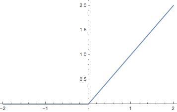
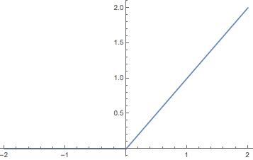

English
EnglishBasic knowledge of deep neural network (DNN)
This article briefly introduces the relevant aspects of deep neural networks in a relatively popular way. The main purpose is to let students who have never been in contact with them learn the relevant knowledge of deep neural networks in machine learning from scratch. This article does not involve in-depth knowledge introduction.
If there is something wrong or needs to be supplemented, please submit the amendment.
This article is translated from Chinese, so may have some misexpressions, Pull request is welcome!
How to solve a problem-lead the machine to solve the problem
A question is usually divided into input and output (result)
For example:
A straight line in the coordinate system is as follows, the value of the above data point is known:

Now ask the question, if the data point law does not change, enter an x coordinate of 20, what is the value of y?
According to everyone’s knowledge, we all know that this is a one-variable linear equation (y = kx + b can be solved). Bring in the values of two points and calculate the equation as y = 3x + 10, then when x=20 The value of, y is 70, so the input is 20 and the output is 70.
Here is input (20) + algorithm (one-variable linear equation) = output (70). This is the basic method we use to solve a problem, so the key is to find the one that conforms to the law of data points on this line segment algorithm.
Humans are very powerful, they will summarize and learn from these data, and finally get this algorithm (equation), and then other people can directly use this algorithm to quickly solve similar problems, then, is there a way to let the machine automatically To find this algorithm?
How to let the machine summarize the algorithm
To let the machine automatically summarize the algorithm, that is, machine learning (ML, Machine Learning), let's take a look at how humans get this algorithm (equation).
- Step 1: First, there are a large number of data points, and then based on these data points, humans found that the straight line conforms to the algorithm
y = kx + b, which adapts to all straight lines, but found that there are two unknownskandb, this is the parameter that adapts to any straight line - Step 2: Then what kind of straight line is the specific, because the equation has two unknowns, namely the parameters, put the actual two data points into this equation, and get
k = 3andb = 10 - Step 3: Then we use the online data points that are not used in step 2 to try whether the algorithm (equation) is correct, and finally we find that they are all verified correctly
- Step 4: Then you need to know the value of
yof other points through the value ofx, just substitutey = 3x + 10
So, can machine learning also use this step?
We thoughtfully designed an algorithm structure, adding that we happened to design it directly as
y = kx + b, we left two parameters for the specific straight line, let’s call this structure model structure for now, because There are unknown parameters, which we call the untrained model structure. Wherexis called input, andyis called outputNow, we substitute a few points of our straight line into this equation, we call this process training, to get the algorithm
y = 3x + 10, there are no unknown parameters, we now call it It is a model or a trained model, wherekbis the parameter in the model, andy = kx + bis the structure of the model. The data points brought into training are called training data, and their collective name is training data setThen, we use several data points on the line segment that are not used in the training process as input, substitute this model for calculation, and get the result, such as
x = 10, gety = 40, and then compare the output Whether the value is consistent with expectations, here we find thatx = 10, y = 40is indeed on the straight line in the figure, and this point is not used during training, indicating that the model we got passed this verification. The process is called verification,x = 10, y = 40This data is called verification data. If we use multiple sets of data to verify this model, the collective term for these data is called validation data setNow, we have obtained a model, and verified this model with validation data set, which seems to be very accurate, then we can assume that this model basically satisfies our future. x
, requires the value ofyat any point on the line in the figure, you can enterxto give they` coordinate of the corresponding point on the line. This process is actually using the model, this process is called reasoning
In fact, this is regarded as machine learning. What we humans need is to design the structure of y = kx + b, and give training data set and validation data set, after training And verify to get a model we think is available, and then use input + model to get the correct output (result).
What is a deep neural network?
Deep neural network (DNN) is a technology in the field of machine learning (ML).
I mentioned a relatively simple example. According to a straight line data to predict any point on the straight line, the structure of y = kx + b is artificially designed and very simple. When used for complex data, it is not found Applied, such as "Is this picture a ball or a toy"

In order to store the information of the next straight line in the model, the structure y = kx + b is used, and the features of the straight line are all stored in the model.
The features used to store a picture now, the linear structure of y = kx + b, and the two parameters of k and b obviously cannot be satisfied. A better structure needs to be designed. The network ** appeared, a kind of mesh structure, which can better remember the characteristic information of the picture, and this mesh structure is multi-layered, that is, it has depth, so it is called a deep neural network (DNN). , Deep neural network), so DNN is a network structure and a means to realize machine learning. Each layer is composed of multiple nodes, as shown in the figure below, a DNN contains input layer, hidden layer, output layer, where the hidden layer consists of three layers (A[1] , A[2], A[3]layer), but collectively referred to as hidden layers:

Input layer:
The figure is a deep neural network structure, x is the input, for example, x here can be a picture, the input has multiple nodes, each node can be a pixel value, here the input layer draws 7 nodes, add We have a picture with a resolution of 10 x 10, so the input layer requires a total of 100 nodes.
Here the input layer is a one-dimensional structure, and the actual situation may have a multi-dimensional structure. For example, if the input is a grayscale image with a resolution of 3x3, this is actually a two-dimensional structure, that is, a matrix with two rows and two columns (about the matrix Please study the concept by yourself, or understand it as a two-dimensional array for the time being), such as:
[[109 138 110]
[220 37 166]
[32 243 67]
]
The value range of each pixel is ∈[0, 255], and then we flatten it into a one-dimensional array of 9 data for the input layer
[109 138 110 220 37 166 32 243 67]
In addition, the value of the input layer will generally be normalized to the range
[0, 1]
If it is a color picture, it is three-dimensional, that is height, width, color channel, color channels such as RGB three color channels, that is, the input has a shape (including the dimensions and the number of data in each dimension), For example, the one-dimensional input shape above is (9), and other images usually use (height, width, number of channels) to represent the shape, such as (10, 10, 3) for resolution of 10 x 10 , And there are three color channels, such as RGB.
Here for the sake of getting started, the principle only introduces one-dimensional situation
Output layer:
y is the output. The output here has two values. You can understand that the achievement is the list of MaixPy's two floating-point values. [Y1, Y2], Y1 is the probability of being a small ball, value ∈[0, 1],Y2isprobability of being a toy. So in the end, we use this model, which is to give it a picture. The machine calculates according to the structure and algorithm specified by this model to get alist`, and we know what is in the picture based on the output value.
Hidden layer:
The hidden layer connecting the input layer and the output layer, as well as the connection in between, are responsible for calculating the input data into a reasonable output value.
Rest in between, summary
So far, you know what a model is: it is a set of data structures that save the shape of a network and the parameters inside. Usually, the data of this model can be saved as a file, such as .h5. Files such as tflite.kmodel are used to explain the shape structure and parameters of this model, but they are used by different software.
People only need to design the model structure and parameters to solve a class of problems, such as common object classification, such as the distinction between a ball or a toy in a picture as mentioned above.
There are many parameters in this model. Specifically, when an object needs to be identified, a data set of known classification is used to allow the machine to automatically train a set of appropriate model parameters.
Then we can enter the data and let the model infer the type of the input data.
Therefore, if we don’t need to train the model and directly use the model trained by others, we only need:
- Confirm the requirements and find a ready-made model, because the model has been trained, and the meaning of the input and output shapes has been determined
- Confirm the input shape of the model, such as the model input resolution
10x10color image, you need to pass the required image to an input layer when using it - Confirm the meaning of the output layer, such as the aforementioned recognition of balls and toys, and the final output is a list representing the probability of the object, such as
[0.9, 0.1], the first value represents the probability of a ball, Then we know that there is a 90% probability of a small ball in this picture, and only a 10% probability of a toy - Put the model into the inference program to run. Don’t worry about the specific procedure, it will be introduced in the next chapter
At this point, you should roughly understand the following things:
- What is machine learning
- What is a deep neural network (simple concept)
- What is the model
- What is the input layer, the output layer, what are the meanings of the classification applications in the example above, and what is the shape of the layer?
- So far, I may not know what model training is
- If I need a model, I know how to confirm the demand
So, if you only want to be able to use the model and don’t need training, you can do it here, and you don’t need to know anything about the model, just use it as a black box toolbox. can. If you want a deeper understanding, please continue to read the following content.
Continue: Deep Neural Networks (Continued
Now that we have designed a multi-layer design, let's go deeper:
Data flow, weight, bias:
When the model is inferring, the data flows from the input layer to the output layer, which is the direction of these mesh arrows (section 3 mesh diagram). The calculation from the previous layer to the next layer of each arrow can use a familiar formula: y = wx + b, call w as weight (weight), b as bias (bias), note that each arrow has a separate w, b, that is to say, the value of the node of the next layer is equal to the value of the node of the previous layer after the calculation of this formula, the node of the next layer has multiple nodes of the previous layer, it is equal to the value of all the nodes of the previous layer after this The sum of the calculated values of the formula.
After so many calculations, the result finally appeared in the form of a value in the output layer, and the whole reasoning was completed.
Activation function:
Although the above model can get results through input, it will be found that all layer calculations are linear functions, so no matter how many layers there are, the whole is actually a linear function, that is, y0 = w1x + b1 + y = w2y0 + b2==> y = w2(w1x + b1) + b2 ==> y = w2w1x + w2b1 + b2, in fact it is still a linear function, then the meaning of multiple layers is gone, so we need to add in the middle Non-linear functions make the network a little more complicated, so I will do tricks on each node. Before each node outputs data, use a non-linear function to calculate it, such as sigmod or relu function. It’s actually very simple to hear the name. Looking at the picture below, in short, x and y are not linear:
 

That is, until now, except for the input layer, the output value of all nodes needs to go through Sigmod(∑(Wn * x + Bn)), and output a floating point value
softmax:
When the output layer is finally output, because of the previous calculations, the value range is not very uniform. Although we can compare the size, the largest value is considered the answer, but for the sake of uniformity and intuitively know the possibility of each category (In addition, for the accuracy of training, I won’t talk about it here.) As mentioned earlier, the probability of a category we finally output has a value range ∈[0, 1], and the sum of all output values is 1, so All values of the output layer are processed after the output layer, the formula is

At this point, the inference process from input to output is over
Deep neural network training
Earlier we briefly introduced the structure and composition of deep neural networks and the forward process from the input layer to the output layer. When we use the model, this is the forward process.
Then, the model is set, and the parameters (such as w, b) in it are all random values. How to make it automatically train to get the values of the parameters in the model? As we mentioned earlier, we use some data input with known results to get the parameters. Similarly, here we also input data with known results to get the first output result
Judging the output accuracy (accuracy) (or error/loss) and loss function:
The results are obtained in the output layer. For example, [0.6, 0.4] represents the probability of a small ball 0.9, and the probability of a toy is 0.1, but because it is data with known answers, the actual correct answer is [ 1.0, 0.0], which obviously does not meet the requirements.
Therefore, the error between the correct answer and the calculated answer is: [0.4, -0.4], but one problem is that the range of the error value is not very attractive. If the value range of the error is ∈[0, ∞]Just fine. In high school mathematics, there is a function y = log10(x), the coordinate diagram is as follows:

It is found that when x takes the value ∈[0, 1], the value of -y is exactly ∈[0, ∞], and our output result is also exactly ∈[0, 1]! Therefore, we directly calculate the error like this: error = -log10(output), that is, the closer the output is to 1, the closer the error is to 0. This method is called CEE, Cross Entropy Error), in addition to this method, there are other methods such as Mean Squared Error (MSE, Mean Squared Error), etc.
At this point, we know the error between the current result and the actual result
Back propagation of error and Parameter optimization (weight update):
Because the parameters of the model do not meet our expectations, we need to modify the parameters. We use backpropagation.
Earlier we got the error, because the parameters are not correct enough, we use this error to modify the parameters in the model to achieve the effect of fine-tuning the parameters in the model. It is as if you are turning on a faucet. If the water hits (that is, the error is large), tighten the switch a little bit, loosen it a little bit if it is smaller, and adjust it.
Just like our forward calculation, this time we changed it to reverse. From back to front, we can get the error value at each node, and then update the parameters in the model according to a certain learning rate. I won't elaborate on it for the time being.
In short, after a round of reverse adjustment of parameters, a new model is obtained
Measure the quality of the model: training set error and validation set error:
We use the data in the training data set to repeatedly perform forward inference to obtain the error, and then adjust the process in the reverse direction. After using the training data set, we may get a relatively small error, but this only shows that the model is The data is more accurate, and some new data may not be accurate, so we need to use some data that is not in the training set to verify the effect of the model:
We use validation data set to forward inference and get the error, because the validation data set is not involved in training, which means that the parameters of the model and the validation data set have nothing to do with each other. We use the error obtained to constant the model The better or worse, the smaller the error, the better the effect
Multiple iterations:
If you have trained all the data sets and find that the error is still large, you can continue training with multiple training methods, that is, multiple iterations. After each iteration, use the verification data set to verify the effect. If the error of the training set and the error of the validation set are small enough, we can temporarily assume that the model has good results.
Test Set:
At this time, we can use another batch of new data to test the effect of our model, because this is brand-new data, did not participate in the training and did not participate in the verification (that is, determine when to stop training), theoretically more Credibility. If the test error is small, then the training is considered successful
Optimize training:
If the final effect is not very good, there are many places to adjust, such as
- The number of training iterations is not the more the better. Too much training on a batch of data sets may cause the model to be effective only for this batch of data, and the generalization ability is not enough, that is, overfitting
- The learning rate of each training can also be adjusted
- Check the data set, whether there are some data that affect the classification
- Optimize the network structure, whether it is input or output or internal structure and parameters, according to different data and tasks can have a better design, also called feature engineering
Said at the end
At this point, you should roughly understand the following things:
- What is machine learning
- What is a deep neural network
- What is the model
- What is the input layer, the output layer, what are the meanings of the classification applications in the example above, and what is the shape of the layer?
- What is training and what is its function
- What are the data training set, validation set, and test set, where are they used, and what needs to be paid attention to
- What is the standard to measure the quality of the model
If you still don’t understand, you can understand it again carefully, or refer to related materials. If you find a better way to explain it, please follow the document contribution method in the left directory to participate in the contribution.